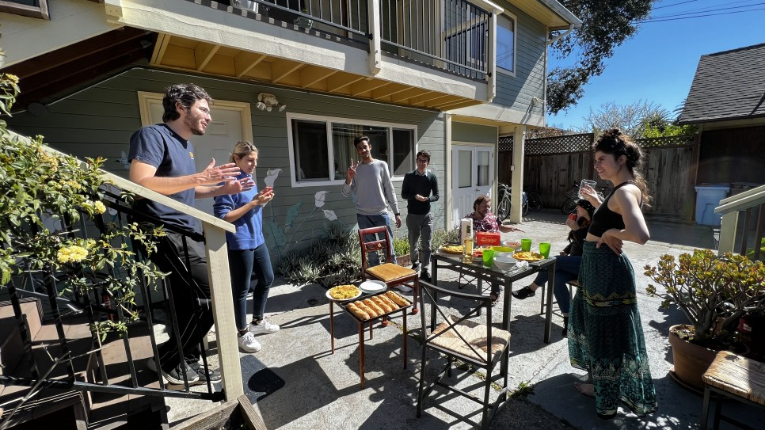

Teamwork

스페인 친구들이랑 발렌시아식 브런치 먹은 날
오늘은 버클리의 팀플에 대해 잠깐 이야기 해보려 한다.
일단 팀플, 여기선 프로젝트라고 부르는 것에는 종류가 있다. 크게는 3가지로 나눌 수 있다. (그냥 내가 임의로 나눴다.)

SCET 행사 중에 한 activity
1. 클래스 프로젝트
이름에서 미루어 짐작할 수 있듯이, 학교 조별과제다. 강제로 팀을 묶어주는 경우도 있고, 알아서 팀을 찾아야 하는 경우도 있다. 일부 클래스의 경우 클래스를 듣지 않는 학생들과 팀을 이뤄서 해도 되고, 혼자하는 것을 추천하지 않는다는 문구가 적혀있는 경우도 있다. (혼자 해도 되는데 고생한다는 말)
나는 지금 총 4개의 클래스 프로젝트에 들어가있다. (…)
- Challenge Lab: Opportunity Tech and Future of Work
- Product Management
- Decode: Silicon Valley Startup Success
- Financial Inclusion
각 클래스 프로젝트들은 중간평가, 동료평가, final delivery 등 instructor들 마다 detail한 조건들이 있다. 그래서 syllabus를 꼼꼼하게 읽어야 한다. 그리고 매주 들여다보게 되어있다. 평가 기준을 체크해야 해서…
syllabus와 assignment instructioin에서 intructor들의 성향을 엿볼 수 있는데, 그냥 casual하게 했다가 중간평가에서 점수가 마구 잘려나가서 instructor가 자신의 평가에 대해서 공지까지 따로 하는 사태도 있었다.
일단 예시로 Product Management의 syllabus와 group assignment 요구조건을 들고왔다.

일단 출석을 중요시 여기는 코스도 있고, 아닌 코스도 있다. 수업 중에 전혀 출석을 부르지 않아도 TA가 전부 체크하고 반영하기도 한다.

그룹 숙제 5개, 개인 숙제 13개, 클래스 참여도 평가.
얼마 전에 학기가 반환점을 돌았는데, TA로부터 participation 점수에 대한 메일이 날아왔다. 내용은 대충… “너의 점수는 평균 이상이고, 적극적인 참여에 감사한다. 평균 이상이라고 하더라도 앞으로 남은 기간동안 이런 activity들을 해준다면 점수가 더 높아질 수 있고, 현재의 상태를 유지할 수 있다 blabla… 앞으로도 잘 부탁한다.”
그리고 peer review도 진행되는데, 30점의 점수를 팀원들에게 분배하는 계량평가와 각 팀원이 어떤 역할을 했고 어떤 기여를 했으며, 어떤 주관적인 평가를 내릴 것인지 물어보는 정성평가가 있었다. 미국은 peer review 때 아주 칼같이 평가한다고 들었는데 과연 내 팀메이트들은… (솔직히 어느정도 각오는 하고 있는데, 실제로 썰려나가면 그 때 무서움을 제대로 알 것 같다.)
그리고 group assignment에는 아주 상세한 instruction이 달려있다.

어설프게 쓰지말고 제대로 정확하게 알아들을 수 있게쓰라는 이야기는 다른 코스의 instruction에도 있었다.
instructor가 과제에 일정 수준의 최소 요구치를 주고 싶은 경우에 이런 기준으로 성적이 나올 것이다라는 이야기를 미리 하기도 한다.

Grade B- and below are rare but not unheard of………………

final delivery 중 하나인 high-fidelity prototype에 대한 기준.
Unit이 3, 4정도 되는 클래스는 이 정도의 디테일한 평가기준과 함께 학생들을 꽤나 빡세게 몰아붙이는 경향이 있다. 그리고 최소한 내가 경험한 버클리 수업들은 공부는 각자 해오는 것이고 수업은 복습과 정리, 토론, 실시간 피드백을 목적으로 하고 있었다. 수강신청 시에 계속 보는 코스 안내 페이지에서 workload를 확인할 수 있는데, 보통 4유닛 코스는 일주일 4시간 수업에 out-of-campus activity 8시간이 기본 값이다.
2. 개별 프로젝트
개인프로젝트도 아닌 팀프로젝트도 아닌 어중간한 성격의 그냥 ’해보고 싶어서 하는 프로젝트’를 의미한다. 여기선 굉장히 흔하게 볼 수 있는데, 이런 프로젝트를 마음 맞는 친구들끼리 모여서 하면서 시행착오를 통해 성장하고, 비즈니스로 발전시키는 케이스가 버클리의 학생창업 ’정석루트’다.

버클리 시계탑에 올라가면 볼 수 있는 풍경
정말 사소한 무언가라도 함께 할 수 있고, 한 명의 고객이라도 감동시킬 수 있다면 기꺼이 하는 모습들을 곳곳에서 볼 수 있다. (물론 흔하지는 않은데, 모수가 많은 만큼 눈에 많이 띄기도 하고, 홍보를 진짜 적극적으로 하기 때문에 최소한 캠퍼스 내에서는 정말 많이 볼 수 있다.) 그렇게 한 두명의 고객을 감동시킨 이야기를 자신의 experience에 당당하게 써넣고, Managing Partnet, VP 등등 리더쉽 포지션을 마구 걸어놓는다. 팀원 5명에 5명의 리더쉽 포지션인 그런 경우가 다반사지만, 실제로 자신의 일에 책임을 갖고 리드하며 역할을 다하고자 하기 때문에 오히려 멋져보이더라.
버클리 student organization으로 등록되면 자금도 지원받고 이것저것 혜택이 있는 것 같았다. 그리고 학생들 대부분이 학교 활동을 work experience로 기입해서 LinkedIn에 기록해뒀다. 컨설팅, 비즈니스, 금융, IB, Product Management를 주제로 하고 있는 학술 그룹들은 실제로 기업들에게 돈을 받고 학기마다 프로젝트를 수행한다. 학교 수업 이상으로 갈아넣어서 돈도 벌고 경력도 쌓는 그런 모습들 많이 봤다.
3. 비즈니스 프로젝트
진짜 사업이 목적인 프로젝트다. 내가 속해있는 startup semester에는 반 이상이 이미 석사를 졸업한, 학업을 별로 신경쓰지 않아도 되는 친구들이다. 이런 친구들은 이미 이런 프로젝트를 하고 있거나, 새롭게 시작하더라도 애초에 비즈니스를 염두해 두고 팀원을 신중하게 고른다.
많지는 않은데 분명 곳곳에서는 엄청난 사업들이 이미 만들어지고 있고, 사업 외적으로도 돈을 많이 번 학생들을 정말 많이 볼 수 있다. (실리콘 밸리기도 하고, 컴퓨터 잘하는 학생들이 워낙 많은 버클리라 NFT로 진짜 상상도 못할 정도로 돈을 많이 번 이야기를 한 다리만 건너도 들을 수 있다.)
전형적으로 사용하는 개인 과제/팀플 도구들이 있다. 오기 전에 좀 친숙해지면 좋다.
Google G-Suite (Docs, SpreadSheet, Slide, Drive, Gmail)
버클리에 와서 CalCentral ID를 받으면 berkeley.edu가 붙은 G-suite 계정을 받게 된다. (Drive 용량이 무제한인 것 같던데…) 아무튼 이 협업 도구로 팀플을 기본적으로 진행한다.

이런 식으로…
팀이 꾸려지면 해당 과목이나 프로젝트 명으로 drive에 폴더부터 만들고 팀원들과 공유한다. 그리고 Docs를 만들어서 이것저것 실시간으로 같이 정리하고, 작업한다.
Canva
PPT는 사실상 이걸로 다 만든다. 정말 쉽고 이쁘게 순식간에 디자인 할 수 있다. PPT뿐만 아니라 PDF로 보고서 이쁘게 만들어서 제출해야 할 때도 사용한다. 아래는 과제로 제출한 것들의 일부.


보고서 예시


PPT 예시
Overleaf
LaTeX 온라인 편집기다. 편하게 생각하면 논문 편집기인데, 보고서 템플릿 만들어 놓고 제출하면 좀 아카데믹한 보고서를 제출 할 수 있다. 아직 공부 중이지만 어중간한 실력으로도 대충 이런거 써낼 수 있다.

학생들은 이걸로 resume를 작성하기도 한다. overleaf template 갤러리에 정말 많은 템플릿이 있다. 그리고 학교 이메일을 인증하면 advanced 기능들을 사용할 수 있는데, 공동작업이나 이런 부분인 것으로 기억한다. (아직 써본적이 없어서…)
Figma
디자인 프로토타이핑 툴이다. 협업 기능과 간단한 디자인 방식에 프로토타이핑까지 매우 강력한 툴이다. 조금만 둘러보면 쉽게 이것저것 만들어낼 수 있고, 역시나 figma community에 너무나도 많은 디자인 템플릿이 있어서 이를 활용하면 쉽게 앱/웹 프로토타입을 만들어낼 수 있다. 그리고 flow를 시연하는 링크도 바로 생성해서 보고서나 홍보물에 넣어서 디바이스에서 직접 구동하는 것처럼 시연할 수도 있다.

이런 거 처음부터 한땀한땀 만든게 아니다. 남들 작품 떼어와서 붙인 것.
People

PayPal CEO
한국이든 미국이든 항상 조별과제는 사람이 문제다. 너무 캐주얼하게 해서 긴장감이 없는 것이 이 곳의 가장 큰 함정이라고 할 수 있다. 미팅 시간 잡기도 힘들다. 바쁜 친구들 정말 많고, 주말은 양보 못 하는 교환학생들도 많다. 너무 바빠서 가끔 미팅 30분 전에 오늘 안된다 그러기도 하고, 누구는 아무 말도 없이 이런 저런거 정해오고 준비해와서 팀원들을 놀래키지 않나, 거수기도 아니고 의견 없이 좋아요 좋아요하는 친구들도 정말 많다. 그리고 무엇보다도 대부분 학생들이 편하게 휙휙 하는데 결과물 진짜 이쁘게 잘 빠진 것들이 주르륵 나온다.
아직 한 학기를 마무리하지 못해서 내 과정이 괜찮은지 알 수는 없지만, 그냥 이런저런 방식으로 팀플 하느라 고생 중이라는 이야기를 길게 해봤다. 글 읽는 분들이 교환학생 기간 동안 도구를 공부하는 데 시간 많이 빼앗기지 않길 바라며…